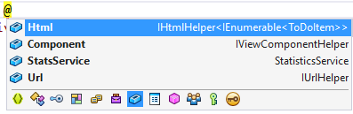

Injecting Services Into Views¶
By Steve Smith
ASP.NET Core supports dependency injection into views. This can be useful for view-specific services, such as localization or data required only for populating view elements. You should try to maintain separation of concerns between your controllers and views. Most of the data your views display should be passed in from the controller.
A Simple Example¶
You can inject a service into a view using the @inject directive. You can think of @inject as adding a property to your view, and populating the property using DI.
- The syntax for
@inject: @inject <type> <name>
An example of @inject in action:
1 2 3 4 5 6 7 8 9 10 11 12 13 14 15 16 17 18 19 20 21 22 23 24 25 26 27 28 29 30 31 32 33 34 35 36 | @using System.Threading.Tasks
@using ViewInjectSample.Model
@using ViewInjectSample.Model.Services
@model IEnumerable<ToDoItem>
@inject StatisticsService StatsService
<!DOCTYPE html>
<html>
<head>
<title>To Do Items</title>
</head>
<body>
<div>
<h1>To Do Items</h1>
<ul>
<li>Total Items: @await StatsService.GetCount()</li>
<li>Completed: @await StatsService.GetCompletedCount()</li>
<li>Avg. Priority: @await StatsService.GetAveragePriority()</li>
</ul>
<table>
<tr>
<th>Name</th>
<th>Priority</th>
<th>Is Done?</th>
</tr>
@foreach (var item in Model)
{
<tr>
<td>@item.Name</td>
<td>@item.Priority</td>
<td>@item.IsDone</td>
</tr>
}
</table>
</div>
</body>
</html>
|
This view displays a list of ToDoItem instances, along with a summary showing overall statistics. The summary is populated from the injected StatisticsService. This service is registered for dependency injection in ConfigureServices in Startup.cs:
1 2 3 4 5 6 7 8 | // For more information on how to configure your application, visit http://go.microsoft.com/fwlink/?LinkID=398940
public void ConfigureServices(IServiceCollection services)
{
services.AddMvc();
services.AddTransient<IToDoItemRepository, ToDoItemRepository>();
services.AddTransient<StatisticsService>();
services.AddTransient<ProfileOptionsService>();
|
The StatisticsService performs some calculations on the set of ToDoItem instances, which it accesses via a repository:
1 2 3 4 5 6 7 8 9 10 11 12 13 14 15 16 17 18 19 20 21 22 23 24 25 26 27 28 29 30 31 32 33 34 35 36 37 38 | using System.Linq;
using System.Threading.Tasks;
using ViewInjectSample.Interfaces;
namespace ViewInjectSample.Model.Services
{
public class StatisticsService
{
private readonly IToDoItemRepository _toDoItemRepository;
public StatisticsService(IToDoItemRepository toDoItemRepository)
{
_toDoItemRepository = toDoItemRepository;
}
public async Task<int> GetCount()
{
return await Task.FromResult(_toDoItemRepository.List().Count());
}
public async Task<int> GetCompletedCount()
{
return await Task.FromResult(
_toDoItemRepository.List().Count(x => x.IsDone));
}
public async Task<double> GetAveragePriority()
{
if (_toDoItemRepository.List().Count() == 0)
{
return 0.0;
}
return await Task.FromResult(
_toDoItemRepository.List().Average(x => x.Priority));
}
}
}
|
The sample repository uses an in-memory collection. The implementation shown above (which operates on all of the data in memory) is not recommended for large, remotely accessed data sets.
The sample displays data from the model bound to the view and the service injected into the view:

Populating Lookup Data¶
View injection can be useful to populate options in UI elements, such as dropdown lists. Consider a user profile form that includes options for specifying gender, state, and other preferences. Rendering such a form using a standard MVC approach would require the controller to request data access services for each of these sets of options, and then populate a model or ViewBag with each set of options to be bound.
An alternative approach injects services directly into the view to obtain the options. This minimizes the amount of code required by the controller, moving this view element construction logic into the view itself. The controller action to display a profile editing form only needs to pass the form the profile instance:
1 2 3 4 5 6 7 8 9 10 11 12 13 14 15 16 17 18 19 20 21 22 | using Microsoft.AspNet.Mvc;
using ViewInjectSample.Model;
namespace ViewInjectSample.Controllers
{
public class ProfileController : Controller
{
[Route("Profile")]
public IActionResult Index()
{
// TODO: look up profile based on logged-in user
var profile = new Profile()
{
Name = "Steve",
FavColor = "Blue",
Gender = "Male",
State = new State("Ohio","OH")
};
return View(profile);
}
}
}
|
The HTML form used to update these preferences includes dropdown lists for three of the properties:

These lists are populated by a service that has been injected into the view:
1 2 3 4 5 6 7 8 9 10 11 12 13 14 15 16 17 18 19 20 21 22 23 24 25 26 27 28 29 30 | @using System.Threading.Tasks
@using ViewInjectSample.Model.Services
@model ViewInjectSample.Model.Profile
@inject ProfileOptionsService Options
<!DOCTYPE html>
<html>
<head>
<title>Update Profile</title>
</head>
<body>
<div>
<h1>Update Profile</h1>
Name: @Html.TextBoxFor(m => m.Name)
<br/>
Gender: @Html.DropDownList("Gender",
Options.ListGenders().Select(g =>
new SelectListItem() { Text = g, Value = g }))
<br/>
State: @Html.DropDownListFor(m => m.State.Code,
Options.ListStates().Select(s =>
new SelectListItem() { Text = s.Name, Value = s.Code}))
<br />
Fav. Color: @Html.DropDownList("FavColor",
Options.ListColors().Select(c =>
new SelectListItem() { Text = c, Value = c }))
</div>
</body>
</html>
|
The ProfileOptionsService is a UI-level service designed to provide just the data needed for this form:
1 2 3 4 5 6 7 8 9 10 11 12 13 14 15 16 17 18 19 20 21 22 23 24 25 26 27 28 29 | using System.Collections.Generic;
namespace ViewInjectSample.Model.Services
{
public class ProfileOptionsService
{
public List<string> ListGenders()
{
// keeping this simple
return new List<string>() {"Female", "Male"};
}
public List<State> ListStates()
{
// a few states from USA
return new List<State>()
{
new State("Alabama", "AL"),
new State("Alaska", "AK"),
new State("Ohio", "OH")
};
}
public List<string> ListColors()
{
return new List<string>() { "Blue","Green","Red","Yellow" };
}
}
}
|
Tip
Don’t forget to register types you will request through dependency injection in the ConfigureServices method in Startup.cs.
Overriding Services¶
In addition to injecting new services, this technique can also be used to override previously injected services on a page. The figure below shows all of the fields available on the page used in the first example:
As you can see, the default fields include Html, Component, and Url (as well as the StatsService that we injected). If for instance you wanted to replace the default HTML Helpers with your own, you could easily do so using @inject:
1 2 3 4 5 6 7 8 9 10 11 12 13 14 | @using System.Threading.Tasks
@using ViewInjectSample.Helpers
@inject MyHtmlHelper Html
<!DOCTYPE html>
<html>
<head>
<title>My Helper</title>
</head>
<body>
<div>
Test: @Html.Value
</div>
</body>
</html>
|
If you want to extend existing services, you can simply use this technique while inheriting from or wrapping the existing implementation with your own.
See Also¶
- Simon Timms Blog: Getting Lookup Data Into Your View